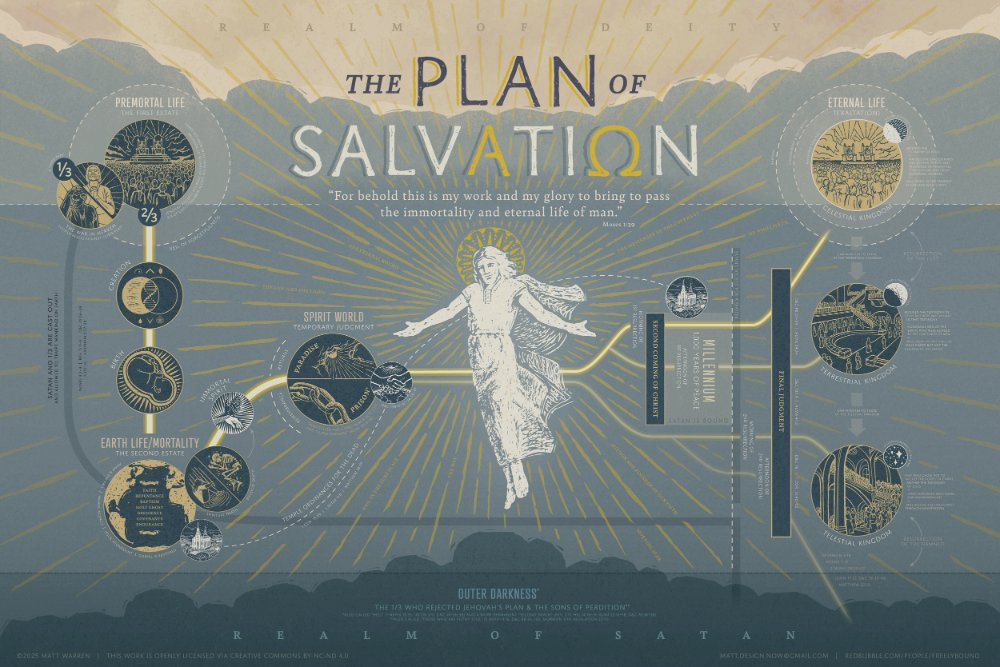

Planted in the Plan
Summit Ward Sacrament Meeting · August 23, 2026
Christ does not wait at the end of the path. He walks it with us.
Good morning, brothers and sisters. Thanks to the bishopric for allowing me this opportunity to speak. I’ve had some thoughts in my mind that I’ve been wanting to share, and I’ve not had the courage to get up and do so in a fast and testimony meeting; so I figured this would be a good way to kind of get that all together and share some of those thoughts.
Earlier this week I found out that I had a shoulder injury that prevented me from doing certain aspects of my job that were rather important. And as such, I lost my job. When I gathered my family later that night to let them know, one of my children said, “Oh no, not again.”
A quote that has been on my mind endlessly of late is: “The day that you plant the seed is not the day that you eat the fruit.”1 Especially as we study the Old Testament, this is a recurring theme. It seems that the righteous before God often live very hard lives; those who were righteous before God frequently endured difficulties with outcomes that defied the expectations we might hold for the faithful.
Adam watched his sons fall almost immediately into apostasy.2 Abraham was given great promises and covenanted righteousness with the Lord, but he apparently never received a mortal fulfillment of all of those blessings; he never even lived in the land he was promised. Jacob, called Israel, lost his wife in childbirth3 and was robbed of the opportunity to fully raise his favored son, Joseph.4 Moses never saw the promised land.5 The prophet Samuel’s sons took bribes and perverted judgment and justice.6 King Josiah turned the idolatrous Israelites back to God, but he later died in a battle with Egypt.7 Then, of course, Job.
These bring up the age-old question: why do bad things happen to good people?
We’ve had the opportunity to teach the Valiant 7s this past year, the seven-year-olds preparing for baptism, and it has been an amazing class. And this has been a through-line in that class as we study the Old Testament: why do these bad things keep happening to these good people?
One of the other through-lines of our class has been the Plan of Salvation. If I could teach no other thing, I would teach the plan of salvation through and through, forever. I don’t think I would get through as much of it as I would want to either, but I’m going to try and do some of that here today. We’ll keep it concise. I can’t talk about everything in one talk.
The Plan is the answer we seek; it has all of the answers we seek, because the through-line of the Plan of Salvation is Jesus Christ. There is no part of that Plan that He is not in.
Symbology of Threes
To better understand a grand and all-encompassing concept like the Plan of Salvation, I find it’s best to break it down. I find it convenient and poetic to split it, as much as possible, into groups of threes. The number three carries pretty special significance for those of Christian and Ancient Hebrew faiths: the three patriarchs—Abraham, Isaac, and Jacob. The people of Israel are classically divided into three groups: the Kohanim (priests), the Levites, and the Israelites. The Hebrew Bible, the Tanakh, is threefold: the Torah, the Nevi’im, the Ketuvim. A classic Talmudic formulation praises God for giving a “threefold Torah to a threefold nation by means of a third-born [Moses] on the third day [of preparation] in the third month [Sivan].”8
We believe in the three members of the Godhead. Christ was risen on the third day after being crucified; three crosses on the hill. The Three Nephites. The three degrees of glory. The Three Witnesses. A third part of the host of heaven. Past, present, future. Boyd K. Packer allegorized the plan of salvation as a play in three acts, and reminds us that “happily ever after” doesn’t take place in Act 2.9
Salvation and Exaltation
Before going further, the name itself—“the Plan of Salvation”—brings up a question of its own in regard to salvation and exaltation. These are concepts that are related but distinct. The most quoted scripture in conference is Moses 1:39, and it will aid us in understanding the distinction between salvation and exaltation:
For behold, this is my work and my glory—to bring to pass the immortality and eternal life of man.10
This describes for us immortality as salvation, and eternal life as exaltation.
What is salvation? Saved from what? Salvation means being saved from physical death and spiritual death through the Atonement and Resurrection of Jesus Christ. Our souls are twofold: body and spirit; and we suffer death twofold—temporal death and spiritual death.
O how great the goodness of our God, who prepareth a way for our escape from the grasp of this awful monster; yea, that monster, death and hell, which I call the death of the body, and also the death of the spirit.
And because of the way of deliverance of our God, the Holy One of Israel, this death, of which I have spoken, which is the temporal, shall deliver up its dead; which death is the grave.
And this death of which I have spoken, which is the spiritual death, shall deliver up its dead; which spiritual death is hell; wherefore, death and hell must deliver up their dead, and hell must deliver up its captive spirits, and the grave must deliver up its captive bodies, and the bodies and the spirits of men will be restored one to the other; and it is by the power of the resurrection of the Holy One of Israel.
O how great the plan of our God! For on the other hand, the paradise of God must deliver up the spirits of the righteous, and the grave deliver up the body of the righteous; and the spirit and the body is restored to itself again, and all men become incorruptible, and immortal, and they are living souls.11
Physical death is overcome for everyone through the universal gift of resurrection; that is immortality. Spiritual death, a separation from God caused by sin, is overcome through faith in Jesus Christ, repentance, baptism, receiving the gift of the Holy Ghost, and enduring with obedience in the gospel. Almost all of God’s children will receive some degree of salvation.
What then is exaltation? It is the covenant path and the true goal of life. Exaltation is only achieved through the proper application of agency. Exaltation is the highest form of salvation and the greatest gift God offers. It means receiving eternal life in the highest degree of the celestial kingdom, becoming like God, living forever in His presence, and continuing as eternal families with the potential for eternal increase.
In John 17 we read:
And this is life eternal, that they might know thee the only true God, and Jesus Christ, whom thou hast sent.12
President Russell M. Nelson summarized these two concepts this way: “To be saved—or to gain salvation—means to be saved from physical and spiritual death. … To be exalted—or to gain exaltation—refers to the highest state of happiness and glory in the celestial realm.”13 Our quote summarizes the path to exaltation: “the day you plant the seed is not the day that you eat the fruit.”
The Plan
So let’s then talk about the Plan of Salvation. We’ll talk a little bit more about agency, because that’s very important. The plan of salvation is God’s design to save men from sin and death and can be summarized essentially in three parts:
- The problem of sin. All people fall short of God’s standard, and sin separates humans from God, leading to spiritual death.
- God’s provision. Because people cannot save themselves through good works, God sent Jesus Christ as a sinless substitute to pay the penalty for sin on the cross.
- The response of faith from us. Salvation is received as a free gift by turning from sin and trusting fully in Jesus Christ alone for forgiveness and eternal life.
President Bednar describes it like this: the overarching purposes of the Father’s plan are to provide His spirit children with opportunities to receive a physical body, learn good from evil through mortal experience, grow spiritually, and progress eternally.14
Traditionally, the plan of salvation is split into three main parts: the premortal life, mortal life, and the postmortal life, or afterlife. These each can be split further into three: the plan, the war, the exodus from the spiritual world; birth, life, death; and so on.
Premortal Life and Agency
Humans lived as spirit children of God before coming to earth, where God presented His plan of happiness. We learn about this plan in Abraham chapter 3:
And there stood one among them that was like unto God, and he said unto those who were with him: We will go down, for there is space there, and we will take of these materials, and we will make an earth whereon these may dwell;
And we will prove them herewith, to see if they will do all things whatsoever the Lord their God shall command them;
And they who keep their first estate shall be added upon; and they who keep not their first estate shall not have glory in the same kingdom with those who keep their first estate; and they who keep their second estate shall have glory added upon their heads for ever and ever.
And the Lord said: Whom shall I send? And one answered like unto the Son of Man: Here am I, send me. And another answered and said: Here am I, send me. And the Lord said: I will send the first.
And the second was angry, and kept not his first estate; and, at that day, many followed after him.15
One misconception to briefly mention is the fact that there were not two competing plans. This is something that seems to come up pretty often, that Satan had a different plan. That wasn’t the case. Christ was always the chosen one from the beginning. Christ sought to do the will of God, whereas Lucifer sought to change that: “thy will be done” versus “give me the glory.”16
Satan’s plan included salvation, but it did not include exaltation. It was not about compulsion so much as the removal of agency. Essentially it was: there are no consequences. This is not agency. We often conflate agency with choice, and this is incorrect. Agency is knowing the consequences of your actions. For example, if I stick out my hands and I say, “One of these has a penny. It’s the left one. Which one do you want?” That’s agency. You know the consequences of choosing the right hand—it’s no penny; this left one is the penny. If I hold out my hands and say, “Here’s two pennies. Pick one,” that’s not agency, that’s a choice. The outcome is the same no matter what you do, and the choice that you make has no other consequence. This leads into the idea of understanding salvation for those who have never heard. The only time you have agency is when you know which hand has the penny and you are able to choose the penny.
We see this in the Book of Mormon with Korihor. Let me know if this sounds familiar:
And this anti-Christ, whose name was Korihor, … began to preach unto the people that there should be no Christ. And after this manner did he preach, saying:
O ye that are bound down under a foolish and a vain hope, why do ye yoke yourselves with such foolish things? Why do ye look for a Christ? For no man can know of anything which is to come.
Behold, these things which ye call prophecies, which ye say are handed down by holy prophets, behold, they are foolish traditions of your fathers.
How do ye know of their surety? Behold, ye cannot know of things which ye do not see; therefore ye cannot know that there shall be a Christ. Ye look forward and say that ye see a remission of your sins. But behold, it is the effect of a frenzied mind; and this derangement of your minds comes because of the traditions of your fathers, which lead you away into a belief of things which are not so.
And many more such things did he say unto them, telling them that there could be no atonement made for the sins of men, but that every man fared in this life according to the management of the creature; therefore every man prospered according to his genius, and that every man conquered according to his strength; and whatsoever a man did was no crime.17
Korihor was described in this passage as an anti-Christ. We hear a lot of those same things today: “You can’t know.” “You can’t be sure.” “You’re following a bunch of old white men prophets.” “Joseph Smith wasn’t a good guy.”
In Moses 4 we read:
And I, the Lord God, spake unto Moses, saying: That Satan, whom thou hast commanded in the name of mine Only Begotten, is the same which was from the beginning, and he came before me, saying—Behold, here am I, send me, I will be thy son, and I will redeem all mankind, that one soul shall not be lost, and surely I will do it; wherefore give me thine honor.
But, behold, my Beloved Son, which was my Beloved and Chosen from the beginning, said unto me—Father, thy will be done, and the glory be thine forever.
Wherefore, because that Satan rebelled against me, and sought to destroy the agency of man, which I, the Lord God, had given him, and also, that I should give unto him mine own power; by the power of mine Only Begotten, I caused that he should be cast down.18
And here came that birth of agency. We chose to stand with Christ and God. Satan and his followers, that third part, were cast out.
The Afterlife and Judgment
So, mortal life: that’s where we are now. This is Boyd K. Packer’s Act 2 of the play. We’ll come back to this, because this is the important one. This is where we are. This is kind of the crux of the plan of salvation for us. This is the hinge point where all things kind of turn. So we’ll move to the postmortal life, after death. Postmortal life is, again, three parts: spirit world, resurrection, final judgment and assignment to a kingdom of glory. The kingdoms of glory are also described as three traditionally: telestial, terrestrial, and celestial kingdoms.
The interim between death and resurrection: spirit prison and spirit paradise. After the resurrection comes judgment, which is one of my favorite theological concepts and among the greatest of our restored truths: you cannot be saved in a kingdom of glory that you cannot abide in. After our time in the spirit world, our bodies will be resurrected and we will stand before God.
For I, the Lord, will judge all men according to their works, according to the desire of their hearts.19
He that is unjust, let him be unjust still: and he which is filthy, let him be filthy still: and he that is righteous, let him be righteous still: and he that is holy, let him be holy still.20
When we stand before God, we will know where we belong. When we stand before God, we will not be able to lie to Him, or hide our sin, or pretend like we deserve something better. Not only that, but we won’t want something better, because we will know who we are and what we are. My father taught me that final judgment is when the man you have become comes face to face with the man you could have been.
President Oaks taught: we conclude that the final judgment is not just an evaluation of a sum total of good and evil acts—what we have done. It is an acknowledgment of the final effect of our acts and thoughts—what we have become.21
Our words will condemn us, our works will condemn us; we shall not be found spotless; and our thoughts will also condemn us; and in this awful state we shall not dare to look up to our God; and we would fain be glad if we could command the rocks and the mountains to fall upon us to hide us from his presence.
But this cannot be; we must come forth and stand before him in his glory, and in his power, and in his might, majesty, and dominion, and acknowledge to our everlasting shame that all his judgments are just; that he is just in all his works, and that he is merciful unto the children of men; and that he has all power to save every man that believeth on his name and bringeth forth fruit meet for repentance.22
For he who is not able to abide the law of a celestial kingdom cannot abide a celestial glory. And he who cannot abide the law of a terrestrial kingdom cannot abide a terrestrial glory. And he who cannot abide the law of a telestial kingdom cannot abide a telestial glory; therefore he is not meet for a kingdom of glory. Therefore he must abide a kingdom which is not a kingdom of glory.23
However, Christ is our advocate, and the Atonement is our only possible chance for exaltation.
But God did call on men, in the name of his Son, (this being the plan of redemption which was laid) saying: If ye will repent, and harden not your hearts, then will I have mercy upon you, through mine Only Begotten Son;
Therefore, whosoever repenteth, and hardeneth not his heart, he shall have claim on mercy through mine Only Begotten Son, unto a remission of his sins; and these shall enter into my rest.24
We talk to our kids in the Valiant 7s pretty often. We say when we come before God, He’s not going to stand and say, “You did this, this, and this. Oh, that was just awful. Go over there.” It’s going to be more along the lines of: “Where do you belong? Who are you? What have you done? What do you deserve?” and not a single one of us will be able to say that we deserve anything. Not a single one of us. We will stand before God and we will know that we deserve nothing, and less than nothing. That the very breath that we complain with in this life was a blessing; and yet we complain.
And God will agree; and Christ will stand up next to us and say, “But…”
And He will stand for us, and He will speak for us.
Act Two
I’d like to bring us back to mortality, to mortal life, our current estate here in Act 2. Three parts to mortality’s purpose: we are fallen; we must choose to partake in the Atonement of Christ; and we must put on the armor of God and endure to the end.25 Christ commanded:
Be ye therefore perfect, even as your Father which is in heaven is perfect.26
Romans 3 states the obvious:
For all have sinned, and come short of the glory of God.27
We must choose. We must exercise our agency to partake in the Atonement of Christ. We know that the worth of souls is great to God.28 The following remark wonderfully encapsulates our theology, restating this fact: “How much are you worth? You are worth the blood of a God.”29
Jesus suffered for all the sins and all the mistakes of the world, whether we accept Him or not. He suffered them. He suffered for our sins whether we choose to repent and apologize or not. Bad things happen to good people. Why? It’s the law of sacrifice: so we can learn to be like God. A religion that does not require the sacrifice of all things does not have power sufficient to produce the faith necessary unto life and salvation, unto redemption and exaltation.30 Suffering leads us to more fully unite with Christ, who suffered all things for us. The Lord, in His ultimate sovereignty, allows evil to exist only because it fulfills His purposes. President Packer put it this way: “Do not suppose that God willfully causes that which, for his own purposes, he permits.”31
Come Home
I’d like to share parts of something written by a friend of mine, a Catholic man, as he has been investigating our church and theology. Put yourself in the shoes of any of the people spoken of here, because at some point and in some way you and I have been, are, and will be all of them. The sin will not be the same, but the effects and what takes place are the wages of our sin, whether those wages be physical or spiritual. This focuses on the Word of Wisdom, but is an apt allegory for any sin.
My aunt did not die once. She died a thousand times, in installments so small that none of us noticed any single one. And then one day we looked up and there was nothing left.
Meth took her the way the sea takes a coastline: grain by grain, tide by tide, until the map you grew up with does not match the shore anymore. First her smile, then her teeth—those small white evidences of a little girl who had once been photographed, Easter. Then her judgment, which had never been their strongest gift, but which had been hers. Then her tenderness. Then her motherhood, which is the thing I will never forgive the drug for, because her son needed her, and she could not reach him through the glass that had grown up between her soul and her body. And her years, which she gave away in fistfuls without ever understanding what she was spending.
By the end there was something wearing her face, and it would call my grandmother and ask for money in a voice that almost sounded like the daughter my grandmother had carried. And my grandmother would give it, because what else do you do? What else do you do when a thing on the other end of the phone has your child’s voice?
Some believe that falling into temptation is simply weakness. They think it’s either one or a series of bad decisions a stronger person might refuse to make. We have sat at a kitchen table across from someone we loved our entire lives and watched a stranger look back at us out of those familiar eyes. There was a moment we realized that whoever we were speaking to was not actually there anymore—that whatever is animating the body in front of us is not our aunt, not our sister, not our friend, but a tenant. And the lease has been signed in blood we cannot see.
We watched a mother pray. My grandmother prayed the smallest prayer a mother can pray. Not for wealth, not for grandchildren, not for the healing of her broken body, which by the end of this—just let me see her once before I go. Twenty years of that prayer. That prayer was not answered. My grandmother went to the coffin with that prayer still on her.
And my cousin, born already wounded, his mind narrowed in the womb by chemicals. A child whose sentences don’t quite track with the conversation, and whose eyes will sometimes land on you with a recognition that is heartbreaking precisely because it is partial. He should have been a lawyer. He should have been an engineer. He should have been whatever he wanted to be.
People talk about generational sin as if it were a metaphor. It is not a metaphor. I have held it. It has a name and a face and a laugh that comes a half second too late.
My friend continues:
My best friend in law school was named Jared. He was the most brilliant man I’ve ever personally known. Summa cum laude. The kind of mind that made the rest of us feel like we were reading in a second language. Professors called on him because they wanted to hear what he would do with a question. He was kind and warm. Alcohol killed him before he was 45. Not gone to a car accident or to cancer or to anything you could put on a cause-of-death line without flinching. Gone to a bottle. Gone to a demon that hunted him patiently for fifteen years and finally caught him. His organs failing one after another. His magnificent brain drowning in a chemistry he could not stop falling into.
The Christian fathers called the passions a sickness and a slavery. The Philokalia maps the stages of how a thought becomes a chain: suggestion, engagement, consent, captivity, and finally the settled passion—or addiction—where the will is no longer choosing but obeying.32
Alma taught and warned:
And now, as ye have begun to teach the word even so I would that ye should continue to teach; and I would that ye would be diligent and temperate in all things. See that ye bridle all your passions, that ye may be filled with love; see that ye refrain from idleness.33
Our sins do not have to be the end. Elder Holland taught: “However late you think you are, however many chances you think you have missed, however many mistakes you feel you have made, what talents you think you don’t have, or however far from home and family and God you feel you have traveled, I testify that you have not traveled beyond the reach of divine love. It is not possible for you to sink so far that you cannot be reached by the infinite light of Christ’s Atonement.”34
There was a parent who lost a child to sin—not lost to death, which at least lets you grieve and one day stop. Lost to the street. To the years of disappearing. The phone that stops being answered. The front door left unlocked every single night for a decade on the chance that child might finally come through it. And that parent never stopped. Did not move on. Did not decide the child was too far gone. Drove to the worst parts of town. Scanned the faces under the overpass. Searched for years, going gray with it. Burying the hope a hundred times and digging it back up every morning, because a parent does not get to stop loving a child just because the child was lost.
And then came the day that it finally happened. The child, hollowed out, certain they were beyond all loving, looked up—and there was the parent’s face. And neither of them could speak. They just held on. And they wept. The kind of weeping that has years of grief and years of longing pouring out of it all at once. The child sobbing the only words they could find: “I’m sorry. I’m sorry.” And the parent saying the only words that matter. Not “Where have you been?” Not “Do you know what you did to me?” But only, over and over, into their hair: “You’re home.” Understand: the story is not about a parent and a child. This is God, and this is humanity. No one is forgotten by the Father. He did not fold His arms and wait for us to crawl back and prove we were worth it. The moment we were lost, He came after us. Our Father’s beautiful plan is designed to bring you home, not to keep you out. In fact, it is the exact opposite. God is in relentless pursuit of you. He wants all of His children to choose to return to Him, and He employs every possible measure to bring you back. The ultimate cost He paid to reach the very bottom of our pit was not merely patience, and was not effort. It was His Son—sent down below all of it, so there would be no depth where His face was not already waiting for us to find it.35
Believing that we have been forgotten and are too far gone is arrogance and ego.
The Son of Man hath descended below them all. Art thou greater than he?36
“You are not forgotten. No matter how dark your days may seem, no matter how insignificant you may feel, no matter how overshadowed you think you may be, your Heavenly Father has not forgotten you. In fact, He loves you with an infinite love.”37
The door has been unlocked every night. He is still driving the worst parts of town. He’s still scanning the faces. He is still weeping over the ones who are certain they have fallen too far. And the moment you turn around, you will not hear “Where have you been?” or “What have you done?” You will only hear, said over and over, the one thing that has been true since before the foundation of the world:
“Stop running. Come home.”
Softly and tenderly Jesus is calling,
calling for you and for me;
See, on the portals He’s waiting and watching,
watching for you and for me.
Come home, come home,
ye who are weary, come home;
Earnestly, tenderly, Jesus is calling,
calling, O sinner, come home!38
I bear my testimony to you that the Atonement of Jesus Christ is real—that the comfort we can feel even when things are so bleak is true. It’s not necessarily going to pull us out of the water, but the life preserver will keep us afloat. I know that He lives. I know that He will come again, and that He loves us, and He wants us to come home, and that we need to exercise our agency in doing so. We need to become who we were always meant to be.
I share that with you in the name of Jesus Christ. Amen.

Notes
- See Galatians 6:7–9.
- See Genesis 6:5.
- See Genesis 35:18.
- See Genesis 44:28–31.
- See Deuteronomy 34:3–4.
- See 1 Samuel 8:1–3.
- See 2 Kings 23.
- Shabbat 88a.
- Boyd K. Packer, “The Great Plan of Happiness,” in Book of Mormon Teacher Resource Manual.
- Moses 1:39.
- 2 Nephi 9:10–13.
- John 17:3.
- Russell M. Nelson, “Salvation and Exaltation,” Apr. 2008 general conference.
- David A. Bednar, “They Are Their Own Judges,” Oct. 2025 general conference.
- Abraham 3:24–28.
- Moses 4:1–2.
- Alma 30:12–17.
- Moses 4:1–3.
- Doctrine and Covenants 137:9.
- Revelation 22:11.
- Dallin H. Oaks, “The Challenge to Become,” Oct. 2000 general conference.
- Alma 12:14–15.
- Doctrine and Covenants 88:22–24.
- Alma 12:33–34.
- Matthew 24:13.
- Matthew 5:48.
- Romans 3:23.
- Doctrine and Covenants 18:10.
- See 1 Peter 1:18–19.
- Lectures on Faith 6:7; see BYU RSC text.
- Packer, “The Great Plan of Happiness.”
- Quoted material from a friend; original thread: x.com/nicoraytruth.
- Alma 38:10, 12.
- Jeffrey R. Holland, “The Laborers in the Vineyard,” Apr. 2012 general conference.
- Quoted material from a friend; original thread: x.com/nicoraytruth.
- Doctrine and Covenants 122:8.
- Dieter F. Uchtdorf, “Forget Me Not,” Oct. 2011 general conference.
- “Softly and Tenderly Jesus Is Calling.”
 ← Back to home
← Back to home